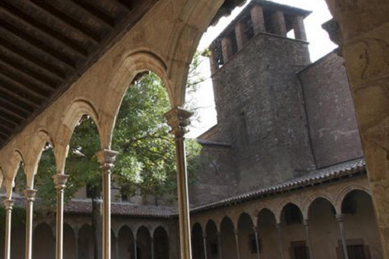

Visita · Sant Joan
Va ser fundat al segle IX per Guifré el Pelós i la primera abadessa en fou Emma, la seva filla. La comunitat femenina fou expulsada al segle XI per raons poc clares (amb aquest fet s'hi relaciona…